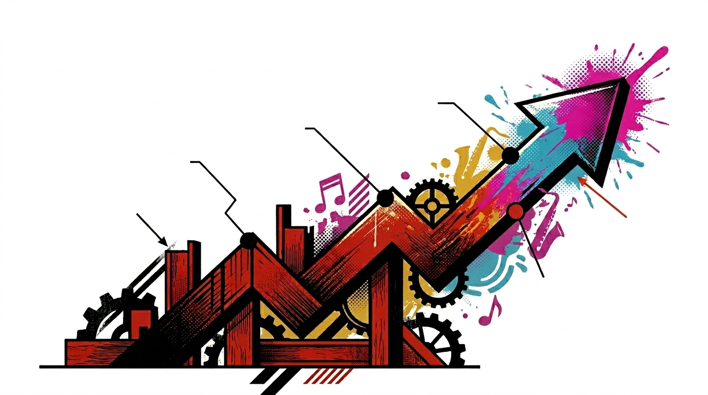

<!doctype html>
<html lang="en">
  <head>
    <meta charset="utf-8" />
    <meta name="viewport" content="width=device-width,initial-scale=1" />
    <title>Stilyagi · Roadmap — six vertical slices</title>
    <link rel="stylesheet" href="assets/colors_and_type.css?v=20260423a" />
    <link
      rel="stylesheet"
      href="assets/motifs_and_components.css?v=20260423a"
    />
    <link rel="stylesheet" href="assets/site.css?v=20260423a" />
    <style>
      .roadmap-wrap {
        max-width: 1240px;
        margin: 0 auto;
        padding: calc(var(--unit) * 4) calc(var(--unit) * 4)
          calc(var(--unit) * 6);
      }
      .timeline {
        border-top: var(--rule-weight-2) solid var(--ink);
        margin-top: calc(var(--unit) * 3);
      }
      .phase {
        border-bottom: var(--rule-weight) solid var(--ink);
        background: var(--paper);
      }
      .phase:hover:not(.open) {
        background: var(--paper-shade);
      }
      .phase .ph-head {
        display: grid;
        grid-template-columns: 120px 1fr 200px 60px;
        align-items: center;
        padding: calc(var(--unit) * 3);
        cursor: pointer;
        gap: calc(var(--unit) * 3);
        user-select: none;
      }
      .ph-num {
        font-family: var(--font-display);
        font-weight: 900;
        font-size: 3.4rem;
        line-height: 1;
      }
      .phase.done .ph-num {
        color: var(--signal-sage);
      }
      .phase.current .ph-num {
        color: var(--press-red);
      }
      .phase.later .ph-num {
        color: var(--ink-soft);
      }
      .ph-title {
        font-family: var(--font-display);
        font-weight: 900;
        text-transform: uppercase;
        font-size: 1.75rem;
        line-height: 1.05;
        margin: 0;
        color: var(--ink);
      }
      .ph-tag {
        font-family: var(--font-sans);
        font-size: 0.72rem;
        letter-spacing: 0.18em;
        color: var(--press-red);
        display: block;
        margin-bottom: 4px;
        font-weight: 700;
        text-transform: uppercase;
      }
      .ph-meta {
        text-align: right;
        font-family: var(--font-sans);
        font-size: 0.72rem;
        letter-spacing: 0.14em;
        text-transform: uppercase;
        color: var(--ink-soft);
        line-height: 1.6;
      }
      .ph-status {
        display: inline-block;
        padding: 3px 8px 2px;
        font-weight: 700;
        letter-spacing: 0.14em;
        margin-bottom: 6px;
      }
      .phase.done .ph-status {
        background: var(--signal-sage);
        color: var(--paper);
      }
      .phase.current .ph-status {
        background: var(--press-red);
        color: var(--paper);
      }
      .phase.later .ph-status {
        background: var(--paper-shade);
        color: var(--ink);
        border: 1px solid var(--ink);
      }
      .ph-toggle {
        font-family: var(--font-display);
        font-size: 2.4rem;
        line-height: 1;
        color: var(--press-red);
        text-align: center;
        transition: transform 180ms;
      }
      .phase.open .ph-toggle {
        transform: rotate(45deg);
        color: var(--ink);
      }
      .ph-body {
        overflow: hidden;
        max-height: 0;
        transition: max-height 280ms ease-out;
        background: var(--paper-shade);
      }
      .phase.open .ph-body {
        max-height: 2200px;
        border-top: var(--rule-weight) solid var(--ink);
      }
      .ph-body-inner {
        display: grid;
        grid-template-columns: minmax(0, 1.3fr) minmax(0, 1fr);
        gap: calc(var(--unit) * 5);
        padding: calc(var(--unit) * 5) calc(var(--unit) * 4);
      }
      .goal h3,
      .deliverables h3 {
        font-family: var(--font-display);
        font-weight: 900;
        text-transform: uppercase;
        font-size: 1.15rem;
        margin: 0 0 10px;
      }
      .goal h3 .red {
        color: var(--press-red);
      }
      .goal p {
        font-family: var(--font-editorial);
        font-size: 1.08rem;
        line-height: 1.55;
        margin-bottom: 14px;
      }
      .ship-strip {
        margin-top: 18px;
        padding: 14px 16px;
        border-left: 4px solid var(--press-red);
        background: var(--paper);
        font-family: var(--font-sans);
        font-size: 0.78rem;
        text-transform: uppercase;
        letter-spacing: 0.08em;
        color: var(--ink);
      }
      .ship-strip b {
        color: var(--press-red);
      }
      .deliverables ul {
        list-style: none;
        padding: 0;
        margin: 0;
      }
      .deliverables li {
        padding: 8px 0 8px 1.8em;
        position: relative;
        border-bottom: 1px dashed rgba(15, 15, 15, 0.2);
        font-family: var(--font-editorial);
        font-size: 1rem;
        line-height: 1.45;
      }
      .deliverables li:last-child {
        border-bottom: 0;
      }
      .deliverables li::before {
        content: "§";
        position: absolute;
        left: 0;
        top: 8px;
        font-family: var(--font-display);
        font-weight: 900;
        color: var(--press-red);
      }
      .legend-bar {
        display: flex;
        gap: 22px;
        flex-wrap: wrap;
        margin-top: 14px;
        font-family: var(--font-sans);
        font-size: 0.72rem;
        letter-spacing: 0.14em;
        text-transform: uppercase;
        color: var(--ink-soft);
      }
      .legend-bar .dot {
        display: inline-block;
        width: 12px;
        height: 12px;
        vertical-align: middle;
        margin-right: 6px;
      }
      .dot-done {
        background: var(--signal-sage);
      }
      .dot-cur {
        background: var(--press-red);
      }
      .dot-later {
        background: var(--paper-shade);
        border: 1px solid var(--ink);
      }
      .risks {
        max-width: 1240px;
        margin: 0 auto;
        padding: calc(var(--unit) * 6) calc(var(--unit) * 4);
        display: grid;
        grid-template-columns: 260px 1fr;
        gap: calc(var(--unit) * 6);
      }
      .margin-note {
        font-family: var(--font-sans);
        font-size: 0.72rem;
        letter-spacing: 0.16em;
        text-transform: uppercase;
        color: var(--ink-soft);
        line-height: 1.8;
        position: sticky;
        top: 100px;
        align-self: start;
      }
      .margin-note .red {
        color: var(--press-red);
        font-weight: 700;
        display: block;
        margin-bottom: 6px;
      }
      .risks .body h3 {
        font-family: var(--font-display);
        font-size: 2rem;
        text-transform: uppercase;
        margin: 0 0 calc(var(--unit) * 2);
        line-height: 0.95;
      }
      .risks .body p {
        font-family: var(--font-editorial);
        font-size: 1.08rem;
        line-height: 1.55;
        max-width: 64ch;
      }
      .risks .body p + p {
        text-indent: 1.8em;
        margin-top: 10px;
      }
      .roadmap-illo {
        max-width: 1240px;
        margin: 0 auto;
        padding: 0 calc(var(--unit) * 4) calc(var(--unit) * 4);
      }
      .roadmap-illo img {
        width: 100%;
        height: auto;
        border: var(--rule-weight-2) solid var(--ink);
        display: block;
        mix-blend-mode: multiply;
      }
      .pacing {
        margin-top: 26px;
        display: grid;
        grid-template-columns: 1fr 1fr;
        gap: 14px;
      }
      .pacing .card {
        border: 1px solid var(--ink);
        padding: 14px 16px;
        background: var(--paper);
      }
      .pacing .card .tt {
        font-family: var(--font-sans);
        font-size: 0.7rem;
        letter-spacing: 0.16em;
        color: var(--press-red);
        font-weight: 700;
        text-transform: uppercase;
        margin-bottom: 6px;
      }
      .pacing .card .body-t {
        font-family: var(--font-editorial);
        font-size: 0.98rem;
        line-height: 1.45;
      }
      @media (max-width: 900px) {
        .phase .ph-head {
          grid-template-columns: 60px 1fr 50px;
        }
        .ph-meta {
          display: none;
        }
        .ph-body-inner,
        .risks {
          grid-template-columns: 1fr;
        }
      }
    </style>
  </head>
  <body>
    <div id="root"></div>

    <script
      src="https://unpkg.com/react@18.3.1/umd/react.development.js"
      integrity="sha384-hD6/rw4ppMLGNu3tX5cjIb+uRZ7UkRJ6BPkLpg4hAu/6onKUg4lLsHAs9EBPT82L"
      crossorigin="anonymous"
    ></script>
    <script
      src="https://unpkg.com/react-dom@18.3.1/umd/react-dom.development.js"
      integrity="sha384-u6aeetuaXnQ38mYT8rp6sbXaQe3NL9t+IBXmnYxwkUI2Hw4bsp2Wvmx4yRQF1uAm"
      crossorigin="anonymous"
    ></script>
    <script
      src="https://unpkg.com/@babel/standalone@7.29.0/babel.min.js"
      integrity="sha384-m08KidiNqLdpJqLq95G/LEi8Qvjl/xUYll3QILypMoQ65QorJ9Lvtp2RXYGBFj1y"
      crossorigin="anonymous"
    ></script>
    <script type="text/babel" src="assets/Primitives.jsx?v=20260423a"></script>
    <script type="text/babel" src="assets/Chrome.jsx?v=20260423a"></script>

    <script type="text/babel">
      const { useState } = React;

      const PHASES = [
        {
          n: "00",
          title: "Skeleton & walking spine",
          tag: "§ Foundations",
          status: "done",
          statusLabel: "Shipped",
          meta: ["0.1.0 · four weeks", "Rust + Python boundary"],
          summary:
            "The Rust extractor emits a minimal Document IR. The Python runtime loads one rule, receives regions, and prints diagnostics. PyO3 wheels build on three platforms. CI runs green. The product exists in outline.",
          ship: "Shipped: a pipeline that runs one rule against one file and prints one diagnostic. Everything downstream is an embellishment.",
          deliverables: [
            "PyO3 bindings with a narrow JSON-over-FFI boundary",
            "Document IR v0 — regions, ranges, content_hash",
            "One working rule: MD201 heading depth",
            "Text formatter with stable ordering",
            "stilyagi check reads paths and stdin",
            "CI green on Linux, macOS, Windows",
          ],
        },
        {
          n: "01",
          title: "Markdown policy pack",
          tag: "§ Content slice I",
          status: "done",
          statusLabel: "Shipped",
          meta: ["0.2.0 · six weeks", "MD rules · safe fixes"],
          summary:
            "Heading hygiene, list consistency, link policy, inline code usage, punctuation within prose. Suppression comments arrive at line and block scope. SARIF output lands. Early adopters can replace Vale for most of their configuration.",
          ship: "Shipped: twenty-two Markdown rules with deterministic output, the first class of safe autofixes, and suppression comments at three scopes.",
          deliverables: [
            "MD rule pack — 22 rules across headings, links, lists, code fences",
            "Suppressions: disable-line, disable-next-line, disable-block",
            "SARIF output, stable across invocations",
            "Safe-fix class with dry-run and --diff",
            "Cache v1 keyed by (content_hash, ruleset_id, capability_set)",
            "stilyagi rule list / show / describe",
          ],
        },
        {
          n: "02",
          title: "Capability planner & docstrings",
          tag: "§ Content slice II",
          status: "current",
          statusLabel: "In flight",
          meta: ["0.4.0 · eight weeks", "Python / Rust docstrings"],
          summary:
            "Extend Stilyagi's reach into source-embedded prose. Introduce the capability planner so linguistic providers are loaded on demand only, and ship docstring extraction for Python and Rust. The planner is the load-bearing move — it is what lets grammar and spelling join the catalogue without taxing every lint run.",
          ship: "In flight: the planner is the hinge the whole design turns on. It guarantees that the base install stays small and fast, no matter what the rule catalogue grows into.",
          deliverables: [
            "Capability planner with explicit provider declarations",
            "Python AST extractor for Module, Class, Function docstrings",
            "Rust syn extractor for /// doc comments",
            "PYDOC rule pack — 14 rules",
            "RSDOC rule pack — 9 rules",
            "stilyagi dump-ir with --include annotations",
            "Owner metadata surfaced in diagnostics",
          ],
        },
        {
          n: "03",
          title: "Grammar & spelling providers",
          tag: "§ Linguistic layer",
          status: "later",
          statusLabel: "Planned",
          meta: ["0.6.0 · ten weeks", "Optional extras"],
          summary:
            "Add the linguistic providers behind the capability planner without compromising the offline base install. Grammar ships as stilyagi[grammar]; spelling as stilyagi[spell]. Neither is required to use Stilyagi's core value — but when enabled, they unlock the GRAM, SPELL, and TERM families.",
          ship: "Planned: prose-level checks arrive as optional extras. The base install remains under thirty megabytes.",
          deliverables: [
            "spaCy provider with model pinning and cache",
            "symspell spellchecker with a bundled dictionary",
            "GRAM rule pack — passive voice, sentence length, modal verbs",
            "SPELL rule pack — common words, allowlists, per-region scoping",
            "TERM rule pack — canonical term enforcement",
            "Documented optional-extras install story",
          ],
        },
        {
          n: "04",
          title: "CI, SARIF polish, packaging",
          tag: "§ Adoption",
          status: "later",
          statusLabel: "Planned",
          meta: ["0.8.0 · six weeks", "Integrations"],
          summary:
            "Make Stilyagi trivial to adopt in CI pipelines, editors, and agentic workflows. Polish every surface a machine will read and every surface a developer will first encounter. Cached runs should be indistinguishable from clean runs modulo timestamp.",
          ship: "Planned: Stilyagi becomes a line in a pre-commit config, a job in an Action, a format a reviewdog already speaks.",
          deliverables: [
            "Pre-commit hook with a config template",
            "GitHub Action with matrix-friendly defaults",
            "Reviewdog format parity",
            "SARIF v2.1.0 full schema conformance",
            "stilyagi config print / validate / explain KEY / locate",
            "Auto-discovery of stilyagi.toml and pyproject.toml",
          ],
        },
        {
          n: "05",
          title: "Editor integration & LSP",
          tag: "§ Daily driver",
          status: "later",
          statusLabel: "Planned",
          meta: ["1.0.0 · twelve weeks", "stilyagi-lsp"],
          summary:
            "Land the editor story. A language server that speaks textDocument/diagnostic, supports codeAction for safe fixes, and respects the capability planner's cost model under interactive load. Incremental analysis keyed by content_hash and line_index. The 1.0 mark — Stilyagi is someone's daily driver.",
          ship: "Planned: version 1.0.0 ships under semver with editor integrations and a public rule stability policy.",
          deliverables: [
            "stilyagi-lsp process with workspace symbols",
            "Incremental re-analysis keyed by line_index",
            "codeAction handlers for safe and unsafe fixes",
            "Suppressions surfaced in hover & relatedInformation",
            "VS Code extension (thin)",
            "Neovim and Zed recipes",
            "1.0.0 release with semver guarantees",
          ],
        },
      ];

      function Phase({ p, open, setOpen, idx }) {
        return (
          <div className={`phase ${p.status} ${open ? "open" : "closed"}`}>
            <div
              className="ph-head"
              onClick={() => setOpen(open ? null : idx)}
              role="button"
              aria-expanded={open}
            >
              <div className="ph-num">{p.n}</div>
              <div>
                <span className="ph-tag">{p.tag}</span>
                <h3 className="ph-title">{p.title}</h3>
              </div>
              <div className="ph-meta">
                <span className="ph-status">{p.statusLabel}</span>
                <br />
                {p.meta.map((m, i) => (
                  <span key={i}>
                    {m}
                    <br />
                  </span>
                ))}
              </div>
              <div className="ph-toggle">+</div>
            </div>
            <div className="ph-body">
              <div className="ph-body-inner">
                <div className="goal">
                  <h3>
                    The <span className="red">goal</span> of this slice
                  </h3>
                  <p>{p.summary}</p>
                  <div className="ship-strip">
                    <b>§</b> &nbsp; {p.ship}
                  </div>
                </div>
                <div className="deliverables">
                  <h3>Deliverables</h3>
                  <ul>
                    {p.deliverables.map((d, i) => (
                      <li key={i}>{d}</li>
                    ))}
                  </ul>
                </div>
              </div>
            </div>
          </div>
        );
      }

      function Roadmap() {
        const [open, setOpen] = useState(2);
        return (
          <React.Fragment>
            <Nav active="roadmap" />

            <PageHero
              eyebrow="§ Roadmap · six vertical slices"
              title={
                <>
                  The <span className="red">plan</span>, by slice.
                </>
              }
              lede="Each phase ships a thin strip through the whole system — extraction, IR, rule, output, cache, docs. We do not build the entire extractor and then the entire rule catalogue. We build one rule working end-to-end, then another, then another."
              stamp="GROUNDED"
            />

            <section className="roadmap-illo">
              
            </section>

            <section className="roadmap-wrap">
              <div className="legend-bar">
                <span>
                  <span className="dot dot-done" />
                  Shipped (0.1–0.2)
                </span>
                <span>
                  <span className="dot dot-cur" />
                  In flight (0.4)
                </span>
                <span>
                  <span className="dot dot-later" />
                  Planned (0.6 – 1.0)
                </span>
              </div>
              <div className="timeline">
                {PHASES.map((p, i) => (
                  <Phase
                    key={p.n}
                    p={p}
                    open={open === i}
                    setOpen={setOpen}
                    idx={i}
                  />
                ))}
              </div>
            </section>

            <section className="risks">
              <aside className="margin-note">
                <span className="red">§ Margin note</span>
                A roadmap is not a promise.
                <br />
                <br />
                It is a public commitment to ordering.
                <br />
                <br />
                Dates slip. Order does not.
                <br />
                <br />
                <span className="red" style={{ marginTop: 12 }}>
                  Pacing
                </span>
                One slice ≈ one quarter. Six slices ≈ eighteen months to 1.0.
              </aside>
              <div className="body">
                <h3>
                  What we will <em>not</em> do along the way
                </h3>
                <p>
                  We will not ship a rule whose diagnostic we cannot justify in
                  one sentence. We will not add a capability to the planner
                  without naming who asked for it. We will not accept a
                  dependency into the base install that pushes the wheel past
                  thirty megabytes.
                </p>
                <p>
                  We will not invent a configuration key to paper over an
                  ambiguous rule. If two users read a rule's description and
                  expect different outcomes, that rule is not ready. It sits in
                  the draft column until it is.
                </p>
                <p>
                  We will not write a linter that calls itself opinionated as a
                  substitute for writing down the opinions. Each rule ships with
                  a rationale paragraph and — where the rationale is contestable
                  — a citation.
                </p>

                <div className="pacing">
                  <div className="card">
                    <div className="tt">§ Cadence</div>
                    <div className="body-t">
                      Minor releases every six to ten weeks. Patches as needed.
                      No sprint theatre.
                    </div>
                  </div>
                  <div className="card">
                    <div className="tt">§ Deprecations</div>
                    <div className="body-t">
                      One minor-version warning before removal. Renames ship
                      with aliases that outlive two minors.
                    </div>
                  </div>
                  <div className="card">
                    <div className="tt">§ Stability</div>
                    <div className="body-t">
                      Rule IDs never change meaning. If a rule evolves, it gets
                      a new ID; the old one is retired, never reassigned.
                    </div>
                  </div>
                  <div className="card">
                    <div className="tt">§ Governance</div>
                    <div className="body-t">
                      New rules require a one-page RFC. New providers require a
                      two-page RFC and a performance budget.
                    </div>
                  </div>
                </div>
              </div>
            </section>

            <Footer active="roadmap" />
          </React.Fragment>
        );
      }

      ReactDOM.createRoot(document.getElementById("root")).render(<Roadmap />);
    </script>
  </body>
</html>
